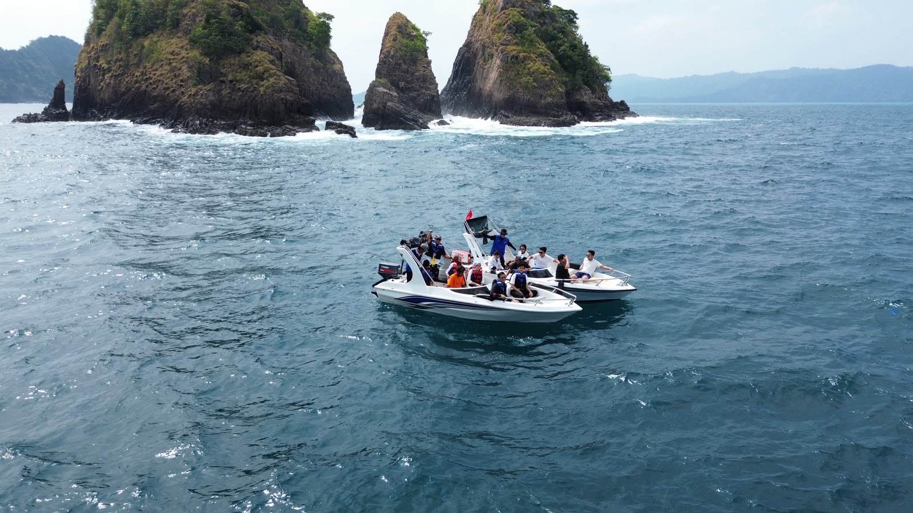
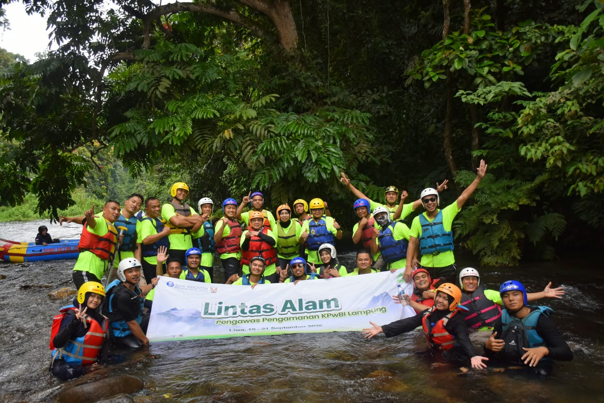
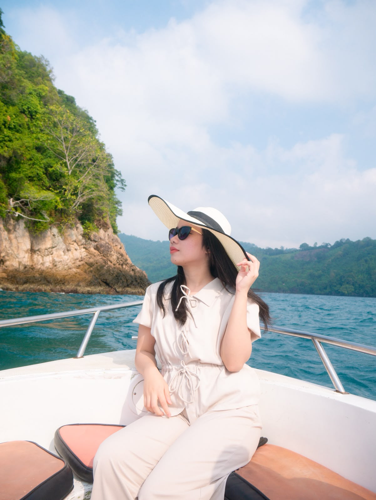
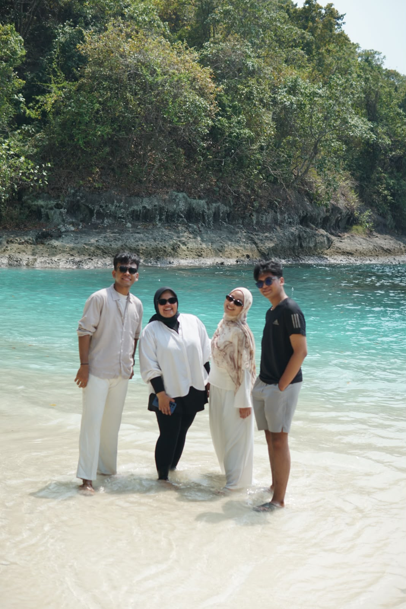
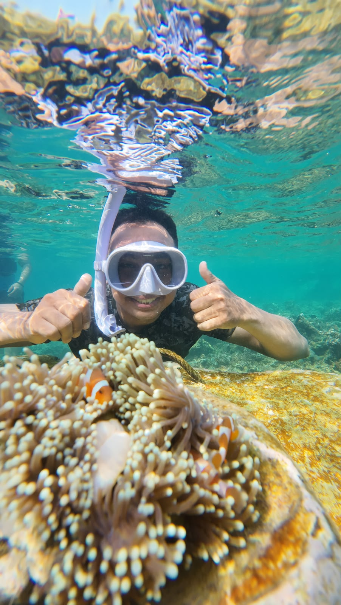
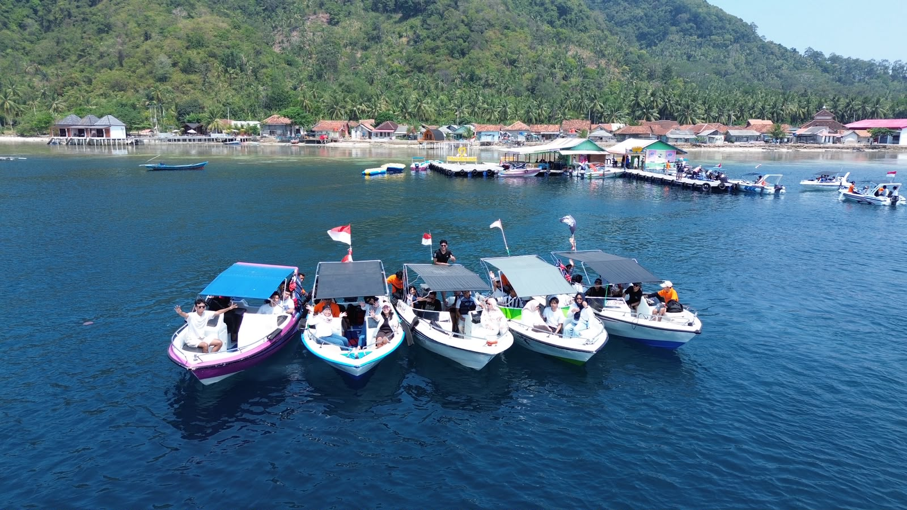

Pulau Wayang Lampung: Potensi Besar yang Belum Tergarap Optimal
Mengenal potensi, tantangan, serta pengelolaan wisata terpadu yang berpihak pada warga lokal dan kelestarian laut.
Lihat artikelMemuat artikel Terra Tour...
TEMAN JALAN-JALAN LAMPUNG
Dari pulau-pulau tenang sampai hutan yang hidup, temukan sisi Lampung yang paling ingin kamu kenang.

Bukan sekadar sampai tujuan.
Pelan-pelan menikmati setiap ceritanya.✳PILIH CERITAMU
Perjalanan dirancang sesuai ritmemu. Pilih paket favorit, atau ceritakan rencana yang ada di kepala.




Rangkaian destinasi dapat mencakup Pulau Wayang, Teluk Hantu, Safari Taman Nasional Way Kambas, Taman Nemo Pahawang, serta Kelagian Kecil / Besar. Susunan perjalanan menyesuaikan musim dan kebutuhan rombongan.
Minta rincian paket
LAMPUNG, DARI SUDUT YANG BERBEDAKENAPA TERRA TOUR
Tim yang tumbuh di Lampung tahu kapan harus berangkat dan tempat mana yang layak ditunggu.
Grup kecil, tempo santai, dan itinerary fleksibel. Tidak ada agenda yang terasa terburu-buru.
Rincian perjalanan dan fasilitas dijelaskan sebelum berangkat. Tim kami siap membantu sepanjang perjalanan.
TESTIMONI
CERITA PERJALANAN TERRA TOURSetiap perjalanan punya cerita. Ceritamu berikutnya bisa dimulai dari Lampung.
CATATAN PERJALANAN
Jelajahi cerita, jurnal, dan panduan tentang destinasi Lampung.
Mengenal potensi, tantangan, serta pengelolaan wisata terpadu yang berpihak pada warga lokal dan kelestarian laut.
Lihat artikelMemuat artikel Terra Tour...
LANGKAH PERTAMA
Ceritakan tanggal, teman jalan, atau sekadar tempat yang bikin penasaran. Kami bantu susun sisanya.
Ngobrol langsungCV Terra Adhi Kencana · Bandar Lampung
terraadhikencana@gmail.com